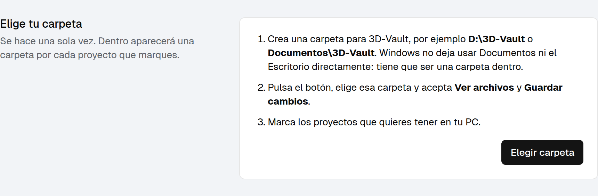
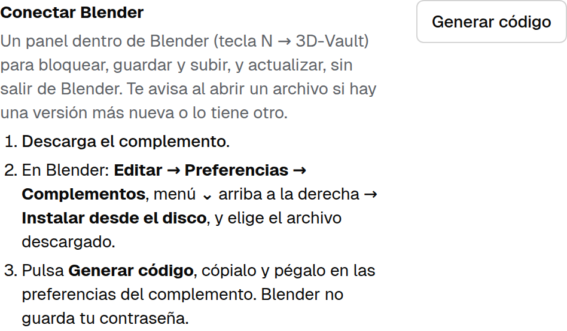
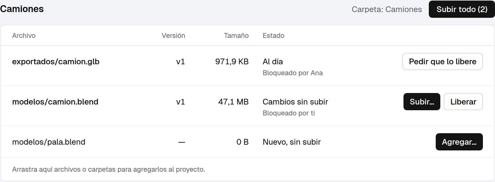
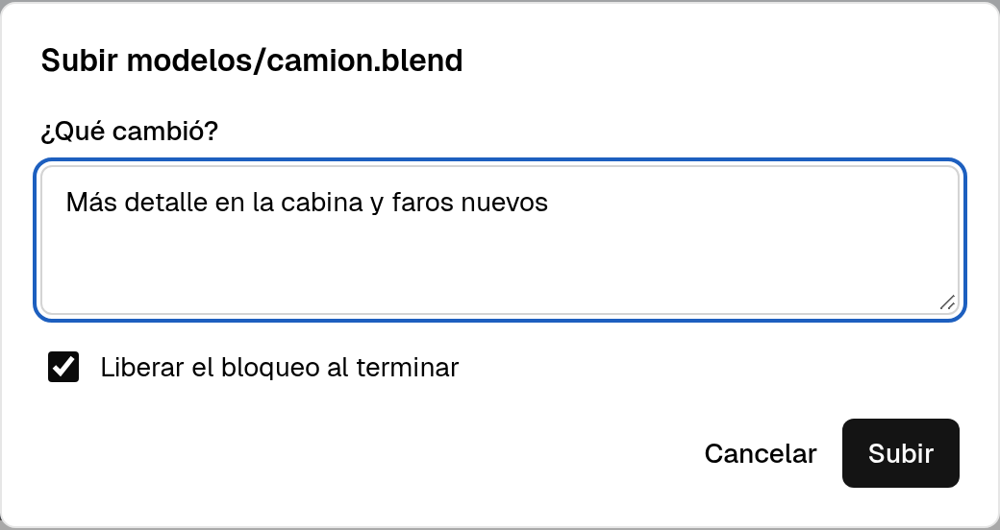
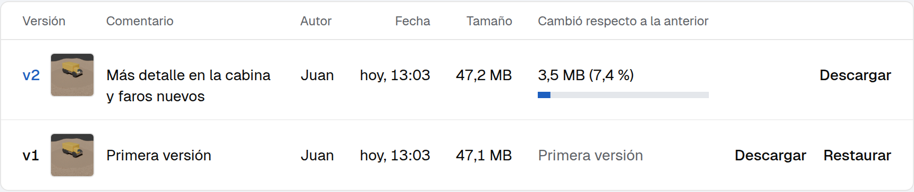

Guía para modeladores. Pasos cortos, en orden. Si haces lo de la página 2 una sola vez y sigues las 4 reglas de abajo, no vas a perder trabajo.
Qué es: un lugar en el servidor de la empresa donde están todos los archivos de cada proyecto, con todas sus versiones. Una carpeta de tu PC se mantiene igual que el servidor. Cuando subes un cambio, solo viaja lo que cambió.
Qué necesitas: Microsoft Edge o Google Chrome. La dirección de 3D-Vault, tu usuario y tu contraseña (te los da el administrador). Blender 4.2 o más nuevo.
No hay que instalar ningún programa. Todo es desde el navegador y desde Blender.

Dentro de tu carpeta aparece una carpeta por proyecto con todos sus archivos.
edge://apps.Desde ahora, al prender la PC se abre 3D-Vault solo. Déjalo abierto (minimizado está bien). Cada vez que abra te puede pedir Permitir y sincronizar: púlsalo.
3dvault-blender.zip. No lo descomprimas.3dvault-blender.zip.
El panel está en la vista 3D: tecla N → pestaña 3D-Vault.
Con Comprimir activado, cada cambio de geometría sube el archivo casi entero. Sin comprimir, solo lo que cambió.


Más rápido: arrastra archivos o carpetas desde el Explorador y suéltalos sobre la tabla del proyecto en Mi carpeta. Se copian y se suben con un solo comentario.
Varios a la vez: el botón Subir todo (N), al lado del nombre del proyecto.
Desde Blender: guarda el archivo nuevo dentro de la carpeta del proyecto → panel 3D-Vault → Agregar a 3D-Vault.
Los respaldos de Blender (.blend1, .blend2) y los temporales no se suben. Está bien.
camion_bajo.blend y camion_alto.blend.Si usas una imagen que está fuera de la carpeta del proyecto (por ejemplo en Descargas), los demás la ven rosa.
texturas del proyecto y las sube..blend (Guardar y subir).Si el bloqueo es tuyo pero de otra PC tuya: Traer el bloqueo a esta PC. Los cambios sin subir de la otra PC se quedan allá.

En Blender: panel 3D-Vault → despliega Versiones → el botón de ventana de una versión la abre aparte, en otra ventana de Blender, para comparar. Tu archivo no cambia.
Modelos .glb, .fbx, .obj, .stl: la ficha los muestra en 3D. Arrastra para girar, rueda para acercar.
| Quiero… | Hago… |
|---|---|
| Cambiar el nombre o la carpeta | Hazlo en el Explorador. Mi carpeta muestra Renombrado o movido → Mover en el servidor. Conserva todas las versiones. |
| Recuperar algo que borré de mi carpeta | Dice No está en tu carpeta → Descargar. |
| Borrarlo para todos | Bórralo de tu carpeta → Borrar del servidor. El administrador puede recuperarlo un tiempo. |
Borrar de tu carpeta no lo borra del servidor.
| Dice | Significa | Haces |
|---|---|---|
| Al día | Tienes la última versión | Nada |
| Bloqueado por ti | Lo estás editando tú | Trabaja, sube, libera |
| Bloqueado por Ana | Lo edita Ana | No lo edites. Pedir que lo libere |
| Cambios sin subir | Guardaste y el servidor no lo tiene | Subir… |
| Sin bloquear (debajo de Cambios sin subir) | Lo editaste sin bloquear | Bloquear y luego sube |
| Nuevo, sin subir | Solo está en tu PC | Agregar… |
| Renombrado o movido | Le cambiaste nombre o carpeta | Mover en el servidor |
| No está en tu carpeta | Lo borraste o moviste | Descargar |
| Descargando / Subiendo 40 % | Está trabajando | Espera. No cierres la ventana |
| Error: … | El mensaje dice qué pasó | Lee el mensaje. Si sigue, avisa |
Si cambiaste un archivo sin bloquearlo y otra persona subió una versión antes, 3D-Vault no borra tu trabajo:
camion.conflicto-juan-20261106-1043.blend.camion.blend.| Pasa esto | Haz esto |
|---|---|
| "Abre esta página en Microsoft Edge o Google Chrome" | Estás en Firefox o Safari. Abre la misma dirección en Edge. |
| No me deja elegir Documentos o el Escritorio | Elige una carpeta dentro de ellos (paso 1.1). |
| Pide permiso cada vez que abro | Permitir y sincronizar. Si ofrece Permitir siempre, elígelo. |
| "Ya está abierta en otra pestaña" | Cierra la otra pestaña o ventana de 3D-Vault. |
| "Tu sesión terminó" | Entra otra vez con tu usuario y contraseña. |
| Dejó de sincronizar al rato | Edge "durmió" la pestaña. Usa la aplicación instalada (paso 1.4). |
| "Bloqueado por … desde …" al subir | No era tuyo el bloqueo. Pide que lo liberen. |
| "Bloqueado por ti en Navegador" | Lo bloqueaste desde la ficha web. Traer el bloqueo a esta PC. |
| Un archivo en "Error: … nombre reservado / caracteres no permitidos" | Renómbralo. Sin puntos ni espacios al final, sin < > : " | ? *. |
| Blender: "no tiene permiso para conectarse" | Preferencias → Sistema → Red → Permitir acceso en línea (Allow Online Access). |
| Blender: "La conexión ya no es válida" | Cambiaste la contraseña. Genera un código nuevo (paso 1.5). |
| Blender: "Este archivo no está en la carpeta de un proyecto" | Abriste una copia de otro lado. Abre el de tu carpeta de 3D-Vault. |
| Blender: "Bloquea el archivo antes de subirlo" | Bloquear y vuelve a subir. |
| Texturas rosas | Quien subió el archivo pulsa Arreglar rutas y sube de nuevo. |
| Se cortó la subida (cerré, se fue internet) | Vuelve a subir. Solo manda lo que faltaba. |
| Nada de lo anterior | Avisa al administrador con el mensaje exacto (una foto de la pantalla sirve). |